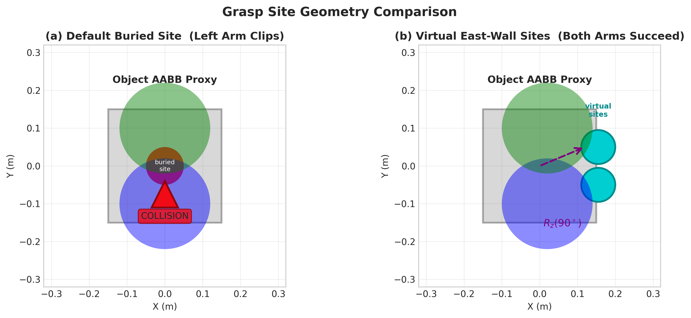
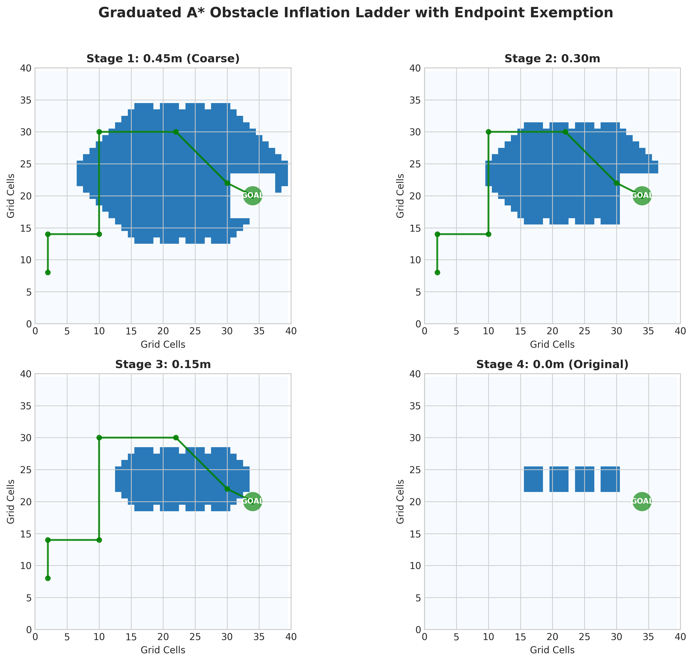
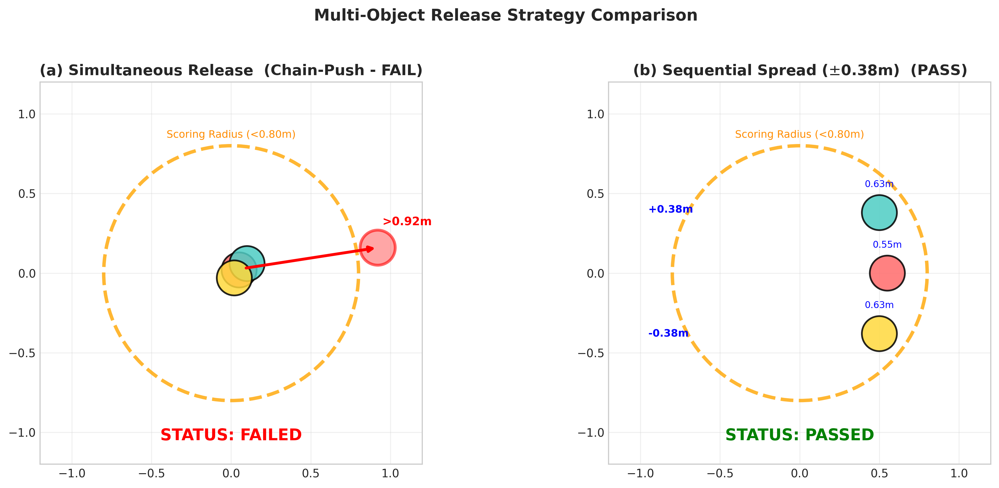

问题
默认的抓取点被埋在货架的碰撞体里，机械臂正面伸进去就穿模、抓空。
洞察
物体的「正面」进不去，但侧面（朝向机器人的一面）其实是敞开的。
解决
把整个抓取动作转 90°，从敞开的一侧下手，在侧面重新设一对「虚拟夹取点」。
效果
穿模消失，双臂对称稳抓；隔离测试逐个托盘验证全部成功。
L1–L5 五关全部满分 · 三项核心创新 · 零碰撞
团队：BIPT-EDU | JCIIOT 2026 RunningRobot
在工厂车间里，机器人从来料工位抓起指定物料，穿过车间，稳稳放到指定出料工位。共 5 个真实车间场景，难度层层递进。
五关全部满分 100/100，全程零碰撞，物体稳稳落在目标区。
让机器人像人一样——先看懂任务、再规划步骤、最后稳稳执行。
一套流程通吃五关，靠配置区分场景，不为每关单独写代码。
机器人比赛，可靠是第一位的。
我们把系统拆成「会思考的大脑」和「靠得住的手脚」两部分，各司其职：
每一步都可解释、可复现、可兜底。
直接用默认方法跑，五关是拿不到满分的。我们撞上了三类真实难题：
目标被「隐形墙」挡住，机械臂一伸就穿模、抓空。
过道太窄，双臂一张开就剐蹭设备，被判碰撞扣分。
多个物体堆在一处，先放的被后放的挤飞出界。
接下来三页，讲我们怎么把它们一个个解决——这正是我们方案的核心创新。
默认的抓取点被埋在货架的碰撞体里，机械臂正面伸进去就穿模、抓空。
物体的「正面」进不去，但侧面（朝向机器人的一面）其实是敞开的。
把整个抓取动作转 90°，从敞开的一侧下手，在侧面重新设一对「虚拟夹取点」。
穿模消失，双臂对称稳抓；隔离测试逐个托盘验证全部成功。

底盘能钻过窄缝，但双臂外伸约半米，窄缝里会剐到设备，直接被判碰撞扣分。
关键不是「能不能过」，而是「过得宽不宽」——要给伸出的手臂留余量。
先按最保守的安全距离找路，找不到再一档档放宽；起点/终点附近不放大，保证精准停靠。
全程优先走「宽路」，五关零碰撞，且能稳稳停到工位正前方。

L5 要放三个托盘，若都丢在同一点，先放的会被后放的挤出计分圈。
放置要「各就各位」，不能扎堆；还得先把物体端正在身前，别歪着掉。
把物体稳稳端在正前方固定位置；多物体时，依次左右错开一点再放。
三个托盘都稳稳落在目标圈内，满分 30/30。

AI 读懂 SOP 文字，自动排出「移动→抓取→移动→放置」四步计划。换任务不用改代码。
技能层按计划精确导航、抓取、放置，融入前面三项创新保证成功。
抓取先用学习模型；万一不稳，立刻切到稳定脚本重试——不掉链子。
一句话：会思考的负责「做什么」，可控的负责「怎么做稳」。二者分层，互不拖累。
| 关卡 | 场景 / 难点 | 满分 | 得分 | 端到端耗时 |
|---|---|---|---|---|
| L1 | 单物体搬运（基线） | 10 | 10 | 83.9 s |
| L2 | 并排托盘 · 东墙抓取 | 15 | 15 | 77.3 s |
| L3 | 窄道导航 · 分级找路 | 20 | 20 | 94.2 s |
| L4 | 密集车间 · 分级找路 | 25 | 25 | 102.3 s |
| L5 | 三物体 · 分散放置 | 30 | 30 | 453.8 s |
| 合计 | 五关全满分 · 零碰撞 | 100 | 100 | ≈ 13.5 min |
五关全部满分
放置误差（阈值 0.80 m）
全程碰撞
耗时为本地端到端运行（含 AI 规划 + 仿真执行）；L5 需完成三趟完整搬运，故最长。
python verify_submission.py
一条命令，秒级重新核算五关 → 100/100
评分用的是官方规则，不是我们自己发明的
不用 GPU、不用大模型、不用渲染
评委可独立重算，结果完全一致
单物体
换向抓取
窄道找路
密集车间
三物体分散放
五关各有 跟随视角 + 俯视全局 两段真实仿真视频
均由满分轨迹回放渲染而成，真实可查。
恳请专家批评指正 · 欢迎提问
团队：BIPT-EDU · JCIIOT 2026 RunningRobot
| 关卡 | 场景 / 搬运路线 | 抓取物体 | 得分 | 耗时 | 难点 → 对策 |
|---|---|---|---|---|---|
| L1 | FactorySorting1 input_5 → output_4 | 料箱 line_5_container_h01_near | 10/10 | 83.9s | 基线关：官方 BC 模型可直接满分 |
| L2 | FactorySorting3 input_6 → output_4 | 绿色托盘 green_tote_b01_lower | 15/15 | 77.3s | 抓取点被埋 → 东墙虚拟抓取 |
| L3 | FactorySorting5 input_6 → output_5 | 蓝色托盘 blue_tote_b01_near_left | 20/20 | 94.2s | 窄道剐蹭 → 分级 A* 膨胀 |
| L4 | FactorySorting7 input_2 → output_5 | 蓝色容器 blue_container_h01_back_upper | 25/25 | 102.3s | 密集车间·路最长 → 分级 A* |
| L5 | FactorySorting9 input_1 → output_6 | 3×白色托盘 white_tote_b01_left_center/front/back | 30/30 | 453.8s | 多物体挤飞 → 换向抓取 + 分散放置 |
递进逻辑：满分 10→30、物体 1→3 个；难度沿「抓取被挡 → 导航又窄又密 → 多物体放置」递增。L5 跑三趟搬运，故耗时最长。